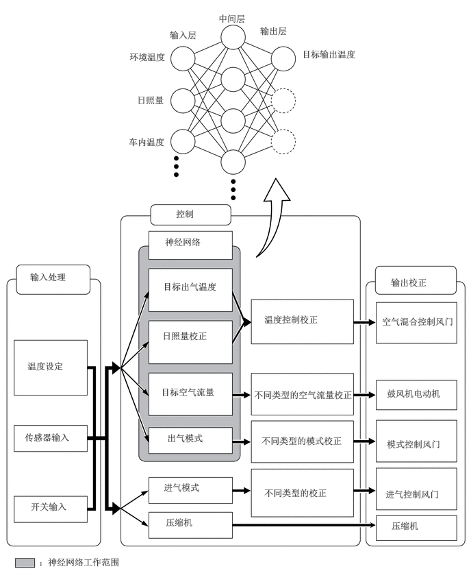
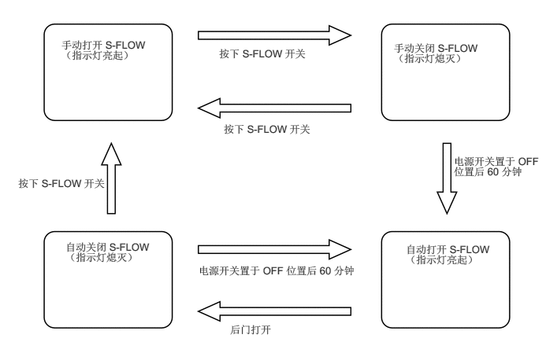
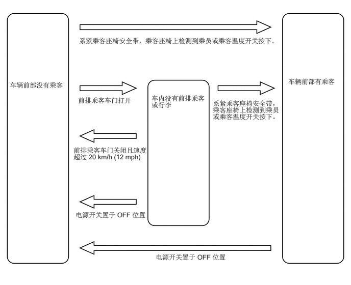
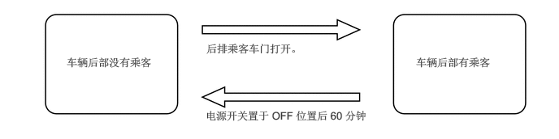
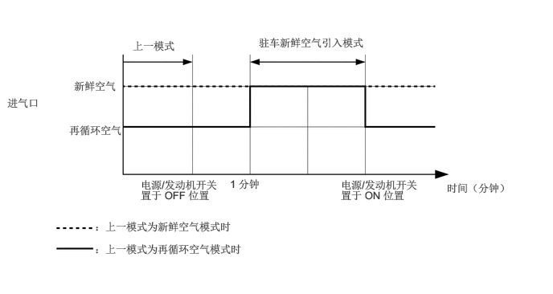

主要零部件的功能
空调系统包括以下零件：
| 零部件 | 功能 | |
|---|---|---|
|
*1：汽油车型 *2：HV 车型 *3：除带 3 区控制的车型外 *4：带 3 区控制的车型 |
||
| 收音机和显示屏接收器总成 | 可通过开关操作和调节空调系统。 | |
| 空调放大器总成 | 传输与接收来自开关和传感器的数据并控制空调系统。 | |
| 带皮带轮的压缩机总成*1 | ·
实现吸入、压缩和排放制冷剂气体。 ·
采用连续可变排量型冷却器压缩机以无级控制制冷剂排放量。 |
|
| 带电动机的压缩机总成*2 | ·
实现吸入、压缩和排放制冷剂气体。 ·
带电动机的压缩机总成由电动机驱动。 |
|
| 带风扇的鼓风机电动机分总成 | 根据空调放大器总成计算的目标气流量进行控制，以向车厢吹入空气并使空气在车厢内流通。 | |
| 空调散热器 1 号风门伺服机构分总成 | 风门伺服机构（模式切换）*3 | 由空调放大器总成控制，以移动模式控制风门并切换调风器。 |
| 风门伺服机构（乘客模式切换）*4 | 由空调放大器总成控制，以移动乘客模式控制风门并切换调风器。 | |
| 风门伺服机构（驾驶员侧空气混合） | 由空调放大器总成控制，以移动驾驶员座椅空气混合控制风门。 | |
| 风门伺服机构（前排乘客座椅空气混合） | 由空调放大器总成控制，以移动前排乘客座椅空气混合控制风门。 | |
| 空调散热器 2 号风门伺服机构分总成 | 风门伺服机构（后风门模式切换） | 由空调放大器总成控制，以移动后模式控制风门。 |
| 空调散热器 3 号风门伺服机构分总成*4 | 风门伺服机构（后风门空气混合） | 由空调放大器总成控制，以移动后排座椅空气混合控制风门并切换调风器。 |
| 空调散热器 4 号风门伺服机构分总成*4 | 风门伺服机构（驾驶员模式切换） | 由空调放大器总成控制，以移动驾驶员模式控制风门并切换调风器。 |
| 1 号鼓风机风门伺服机构分总成 | 风门伺服机构（新鲜空气/再循环风门） | 由空调放大器总成驱动，以移动新鲜空气/再循环风门。 |
| 蒸发器温度传感器（冷却器 1 号热敏电阻） | 检测经过冷却器 1 号蒸发器分总成的冷气温度，并将数据传输至空调放大器总成。 | |
| 环境温度传感器（热敏电阻总成） | 检测环境温度并将其输出至空调放大器总成。 | |
| 冷却器（车内温度传感器）热敏电阻 | 检测车内温度并将其输出至空调放大器总成。 | |
| 湿度传感器（空调热敏电阻总成）*2 | 检测挡风玻璃的温度和挡风玻璃周围的温度和湿度并通过主车身 ECU 将其发送至空调放大器总成（多路网络车身 ECU）。 | |
| 阳光传感器（自动灯光控制传感器） | 检测太阳能量的变化并通过主车身 ECU（多路网络车身 ECU）将其输出至空调放大器总成。 | |
| 空调压力传感器 | 检测制冷剂压力并将数据输出至空调放大器总成。 | |
| 电动驻车制动开关总成
·
ECO 开关 |
发送 ECO 开关 ON 信号至空调放大器总成。 | |
| ECM | 接收来自发动机冷却液温度传感器的信号并将其传输至空调放大器总成。 | |
| 混合动力车辆控制 ECU*2 | ·
将行驶模式控制信号发送至空调放大器总成。 ·
根据空调系统和混合动力控制系统的状态控制带电动机压缩机总成。 |
|
| 组合仪表总成 | 将车速信号传输至空调放大器总成。 | |
| 空气囊 ECU 总成 | 将前排乘客座椅乘员状态和前排乘客座椅安全带带扣开关状态信号传输至空调放大器总成。 | |
| 主车身 ECU（多路网络车身 ECU） | ·
接收来自阳光传感器（自动灯光控制传感器）的信号并将其传输至空调放大器总成。*1 ·
接收来自阳光传感器（自动灯光控制传感器）和湿度传感器（空调热敏电阻总成）的信号并将其传输至空调放大器总成。*2 |
|
系统控制
控制列表
| 控制 | 概要 |
|---|---|
|
*1：汽油车型 *2：HV 车型 *3：带 3 区控制的 HV 车型 |
|
| 神经网络控制 | 该控制可通过人工模拟生物神经系统的信息处理方法进行复杂的控制，以建立类似人脑的复杂输入/输出关系。 |
| 出气温度控制 | ·
根据温度控制开关设定的温度，神经网络控制能够根据来自各种传感器的输入信号计算出气温度。 ·
驾驶员和前排乘客侧的温度设定是独立控制的，以为车厢左右两侧提供独立的车内温度。这样就能满足不同乘员对空调控制的偏好。 |
| 鼓风机控制 | 根据来自不同传感器的输入信号，神经网络控制计算出气流量，控制鼓风机电动机。 |
| 出气控制 | ·
根据来自各种传感器的输入信号，神经网络控制计算出气模式，自动切换出气口。 ·
根据发动机冷却液温度、外界空气温度、日照量、所需的鼓风机、出气温度和车速状况，该控制自动将鼓风机出气口切换到 FOOT/DEF 模式，以防止因外界空气温度过低而导致车窗起雾。 |
| 进气控制 | ·
自动控制进气控制风门以达到计算的所需出气温度。 ·
根据进气控制开关操作驱动 1 号鼓风机风门伺服机构分总成（新鲜空气/再循环风门），并将风门移至 FRESH 或 RECIRC 位置。 |
| ECO 行驶模式控制 | 选择环保行驶模式时，空调放大器总成进入空调环保模式。 |
| 制冷剂量检测控制 | 根据来自各传感器的信号判断制冷剂是否短缺，并通过熄灭空调开关的指示灯来通知用户。 |
| 压缩机控制*1 | ·
空调放大器总成通过调节电磁控制阀的位置控制压缩机排放量。压缩机的目标排放量通过各传感器的信号计算，包括： ·
车内温度传感器 ·
环境温度传感器 ·
蒸发器温度传感器 ·
阳光传感器 ·
鼓风机运行且空调关闭时，通过按下 AUTO 按钮可自动打开空调。 |
| 压缩机控制*2 | ·
空调放大器总成控制压缩机电动机转速。压缩机的目标转速通过各传感器的信号计算，包括： ·
车内温度传感器 ·
环境温度传感器 ·
蒸发器温度传感器 ·
阳光传感器 ·
湿度传感器 ·
鼓风机运行且空调关闭时，通过按下 AUTO 按钮可自动打开空调。 ·
车辆停止或发动机关闭时，降低压缩机转速以确保静谧性。 |
| 驻车新鲜空气控制 | 驻车时自动切换至新鲜空气模式，促进停驻车辆的通风并将车外的空气引入空调装置总成。 |
| S-FLOW 控制*3 | S-FLOW 模式下，优先将气流送至前排座椅，降低后排座椅的气流和空调效果。另外，如果在前排乘客座椅上未检测到乘客，则仅优先将气流送至驾驶员座椅。S-FLOW 模式根据设定温度、车外温度等自动激活。 |
神经网络控制
在以前的自动空调系统中，空调放大器总成根据从传感器接收的信息，按一定的计算公式确定所需的出气温度和鼓风机风量。然而，由于人的感官相当复杂，人所处的环境不同，对同一给定温度的感觉也不同。例如，一定量的太阳辐射在寒冷气候中让人感觉舒适温暖，但在炎热气候中却让人感觉极不舒适。因此，自动空调系统采用神经网络这种可实现高水准控制的技术。使用此技术，将不同环境条件下收集到的数据存储到空调放大器总成中，执行控制以提高空调舒适性。
神经网络控制由输入层神经元、中间层神经元和输出层神经元组成。输入层神经元根据开关和传感器的信号处理环境温度、日照量和车内温度的输入数据，并将其输出至中间层神经元。根据该数据，中间层神经元调节神经元间连接的强度。输出层神经元就可以计算总体结果，并将该结果以所需的出气温度、光照修正量、目标空气流量和出气模式控制量的形式进行呈现。相应地，空调放大器总成根据神经网络控制计算的控制量控制伺服电动机和带风扇的鼓风机电动机分总成。

S-FLOW 控制（带 3 区控制的 HV 车型）
S-FLOW 系统通过仅集中车内占用座椅上的气流来提高空调效率。S-FLOW 为 ON 时，气流集中在前排座椅上，降低后排座椅的气流和空调效果。另外，前排乘客座椅未被占用时，气流将仅集中在驾驶员座椅。根据设定的温度或环境温度，气流可能不仅仅集中在驾驶员座椅上。无论气流是否仅集中在驾驶员座椅上，前排乘客侧的温度指示灯都将熄灭。
以下 S-FLOW 模式可用：
自动 S-FLOW 模式
在该模式下，后排座椅未被占用时，S-FLOW 将自动打开。检测到后排乘客时，S-FLOW 将自动关闭。
无论 S-FLOW 是否打开，空调控制画面上的 S-FLOW 指示灯都将点亮。
为超控自动 S-FLOW 设定并进入手动 S-FLOW 模式，选择空调控制画面上的 S-FLOW 按钮。
手动 S-FLOW 模式
选择 S-FLOW 按钮时，S-FLOW 将手动打开/关闭。
无论 S-FLOW 是否打开，空调控制画面上的 S-FLOW 指示灯都将点亮。
从手动 S-FLOW 模式切换至自动 S-FLOW 模式
选择空调控制画面上的 S-FLOW 按钮以关闭 S-FLOW（S-FLOW 指示灯未点亮）。
将电源开关置于 OFF 位置。
经过 60 分钟，将电源开关切换至 ON 模式。

如果乘客在车内，则系统判定如下：
前排乘客座椅
系统检测到前排乘客座椅上有物体、前排乘客座椅安全带紧固，前排乘客座椅的设定温度改变或前排乘客车门打开并关闭时前排乘客座椅判定为被占用。（但是，仅检测到前排乘客车门打开并关闭时，系统将在车速达到约 12 mph (20 km/h) 或更高后判定乘客座椅未被占用。）
如果前排乘客座椅判定为被占用，系统将保持判定直至电源开关置于 OFF 位置。

后排座椅（仅自动 S-FLOW 模式）：
系统检测到后门打开并关闭时后排座椅判定为被占用。
如果后排座椅判定为被占用，系统将保持判定 60 分钟直至电源开关置于 OFF 位置。

ECO 行驶模式控制
在 ECO 行驶模式下，空调放大器总成在规定状态下限制空调系统的性能，从而提高燃油经济性。
集成控制面板总成（行驶模式选择）工作时，ECO 行驶模式控制激活，然后如下所述限制空调系统性能：
| 控制 | 概要 |
|---|---|
|
*：HV 车型 |
|
| 车内/车外空气开关控制 | 如果车外空气温度超过一定的限制，则模式切换至车内空气再循环。 |
| 鼓风机速度等级控制 | 在自动模式下，鼓风机等级降至规定值并进行控制。此外，处于预热控制时，鼓风机等级降低。 |
| 加热器和压缩机控制* | 加热器或带电动机的压缩机总成工作降低至预留操作等级。 |
制冷剂量检测控制
空调放大器总成根据环境温度、制冷剂压力和刚刚流经冷却器 1 号蒸发器分总成的冷气温度判断制冷剂量。空调放大器总成判断制冷剂短缺时，将熄灭空调开关的指示灯。此时，压缩机总成停止工作。
驻车新鲜空气控制
驻车时，自动选择新鲜空气引入模式，以提高通风性并减少空调装置中残留的异味，从而将发动机起动期间的异味降至最少。

诊断
空调放大器总成具有自诊断功能。其将空调系统或加热器系统的所有故障以诊断故障码 (DTC) 的形式存入存储器中。有关详情，请参考修理手册。